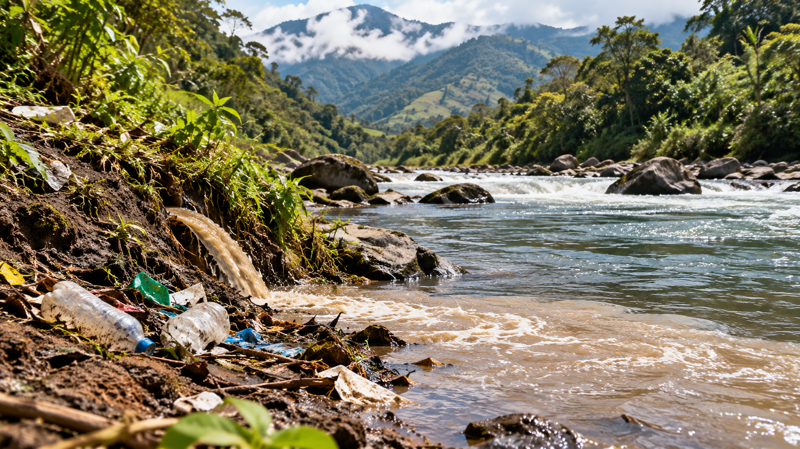

Recursos hídricos
Contaminación del agua
La contaminación de ríos y quebradas afecta la calidad del agua, perjudica a los organismos acuáticos y altera el equilibrio de los ecosistemas que dependen de ella.
Conocer más →